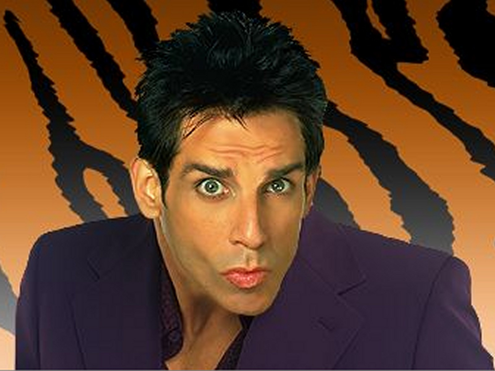
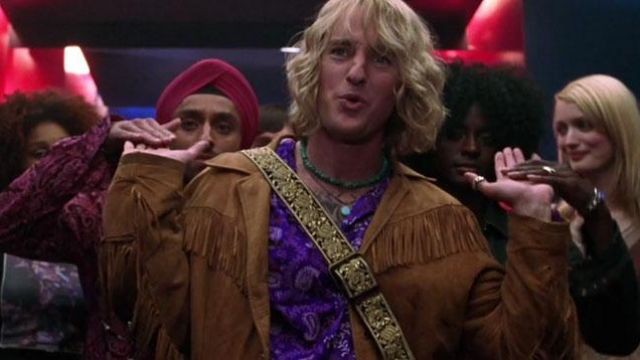

Derek Zoolander

El tres veces modelo del año. Es un personaje que trasciende la pantalla; nació originalmente en sketches para los "VH1 Fashion Awards". Derek representa la sátira máxima de la vacuidad: un hombre cuya crisis existencial comienza cuando pierde su título y descubre que "hay más en la vida que ser ridículamente guapo", aunque no sepa qué es.
Hansel

"Está tan de moda ahora". Interpretado por Owen Wilson, Hansel es el rival que encarna la tendencia "hippy-chic" de principios de los 2000. Su rivalidad con Derek culmina en el icónico duelo de pasarela, una de las escenas más improvisadas y celebradas por su coreografía absurda.
Jacobim Mugatu

El villano excéntrico. Un ex-estrella del pop de los 80 transformado en el diseñador más poderoso del mundo. Mugatu es el motor de la trama conspirativa; su obsesión por el control y su desprecio por la inteligencia de los modelos lo convierten en una caricatura brillante de los excesos de la industria textil.